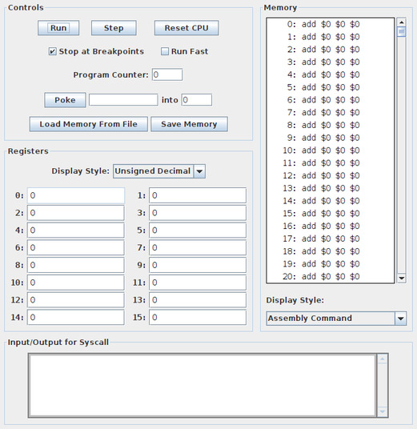

The Larc model computer and its machine language are discussed in another document. This document discusses a program that can be used to simulate and debug Larc programs. The program is written in Java and is available as an executable jar file, larcsim.jar. I will refer to the program as larcsim.
Larcsim can load a Larc program from a file. We will represent a Larc ML program as a text file, using a simple assembly language. The program can include assembly language instructions, but can also include a few additional features. When an assembly language text file is read, it is translated into 16-bit binary numbers that will be stored in the Larc computer's RAM. Locations in memory that are not set from the file are automatically set to zero. The syntax is as follows.
An assembly language program can contain integers expressed in binary, hexadecimal, or decimal form. As in Java, binary numbers start with 0b or 0B, and hexadecimal numbers start with 0x or 0X. A binary number contains from 1 to 16 ones and zeros. A hexadecimal number contains from 1 to 4 hexadecimal digits. A decimal number must be in the range -32768 to 65535, that is, -215 to 216-1. Negative numbers are represented in twos-complement form. (Negative numbers -32768 to -1 and positive numbers 32768 to 65535 are just alternative notations for the same set of 16-bit binary numbers; there is no way to distinguish them once they are translated into machine language.) Examples include 0b1101101010000111, 0b11001, 0xFFFF, 0xA7, -1, 0, and 63882.
Furthermore, in an assembly language program, a single quote followed by a character can be used to represent the 16-bit UNICODE code number of that character. For example, since the code for the character 'a' is 97, the notation 'a in a program represents the number 97. Note that 'a, 97, 0b01100001, and 0x61 are alternative notations for the same 16-bit number.
As far as larcsim is concernted, an assembly language instruction such as lui $2 -89 is just another notation for a 16-bit binary number. In fact, lui $2 -89, 0x92A7, 0b1001001010000111, -27993, and 37543 are different notations for the same 16-bit number.
A string is a sequence of characters. It can be represented in Larc as a sequence of 16-bit numbers stored in consecutive memory locations. We will assume that a string is terminated by a zero character (that is, by the number 0 stored in memory at the end of the string). As a convenience in assembly language programs, if the first non-blank character on a line is a double quote, then the rest of the line is interpreted as a string. That is, the characters on the rest of the line are converted to their UNICODE code numbers and stored in consecutive locations in memory, with a zero added at the end. In the string, the character sequence \n is converted to a single end-of-line character (code number 10), and \\ is converted into a single backslash. No other escape sequences are recognized.
A program can contain comments, which start with a # and extend to end-of-line. (But a # in a string does NOT start a comment; it is part of the string.) Blank lines and lines that only contain comments are ignored.
Only one assembly language instruction, integer, character, or string can appear on a line. When a file is read, values from the file are stored in consecutive memory locations in RAM, starting from location zero. However, the destination address can be changed by a line in the file that contains the character @ followed by a decimal integer in the range 0 to 65535. This resets the destination address to the integer value. For example, a line that reads @150 means that the next value from the file will be stored in location number 150, and the following values in locations 151, 152, 153, and so on. This can be useful for storing data values or subroutines at specific, known locations in memory.
The Larc computer model specifies the structure of the CPU and RAM. but it does not specify any input/output devices such as a keyboard or monitor. How computers use and control such devices is a more advance topic for another time. But from the point of view of a program, the devices are controlled directly by the operating system and indirectly (by other programs) by calling subroutines that are part of the operating system. For historical reasons, those system subroutines are often referred to as "system traps" or "system services." Larc's syscall machine language instruction is used to call system traps.
The Larc Simulator does not actually simulate an operating system. However, it provides five fake system traps that can be called using syscall. The traps are numbered 0, 1, 2, 3, and 4. To call one, the trap number must first be loaded into register number 1. Some traps require other parameters to be loaded into other registers. A syscall instruction takes the trap number from register 1, executes the trap, and does not return until the trap has been executed. If the trap returns any data, that data will be stored in specified registers when the trap returns. Here is what the traps do:
If the value in register 1 is not a legal trap number when syscall is executed, then the computer will be halted with a Bad Trap Number error.
As an example, here is a complete Larc assembly language program, with comments, that prints out Hello World and then halts:
# An Hello World program for the Larc Simulator
li $1 1 # trap number for Print String
li $2 16 # "Hello World" is stored at location 16
li $3 20 # maxlength for the string; larger than actual length is OK
syscall # call the Print String trap
li $1 0 # trap number for Halt
syscall # halt
@16 # store the following, starting at location 16
"Hello World
Larcsim is a GUI program. It is written using Java 17, and you need an installation of Java 17, or a newer version, to run it. The program uses a single window, which is divided into four sections: control panel, registers, memory, and input/output.

The input/output area is used for the four system traps that do I/O. When an input trap needs input, the I/O area is outlined in cyan instead of gray, and the user must type the input before doing anything else.
Each line of the Memory shows the address and value of one location in memory. You can scroll memory using the scrollbar at the right or by rotating the mouse wheel on the content of memory; however wheel scrolling is disabled when the simulator is running a program. You can view the values stored in memory in six different formats. You can select the format using a popup menu. In the above illustration, memory is filled with zeros, and zero as an Assembly Command represents the instruction add $0 $0 $0.
The Signed Decimal style displays 16-bit binary numbers as decimal numbers in the range -32768 to 32767. For the Unsigned Decimal style, the range of numbers is 0 to 65536. For numbers in the range 0 to 32767, the two formats give the same result.
In the character display, some invisible characters are displayed in a format such as '<13> for character number 13. In particular, zero displays as '<0>. Printable ASCII characters will certainly display correctly. For other characters, results may vary.
Similarly, you can view the sixteen registers in different styles, but only the four numeric formats are available. Note that you can edit the values in the registers, except for register zero whose value is always zero. You can type a number into a register using any of the four legal formats; you don't have to use the currently selected format. When you type a new value, your input will be checked when you press return or when the register input loses focus.
Finally, the control panel in the upper left section of the window contains buttons and inputs for controlling the Larc computer. Click "Step" to fetch-and-execute one instruction from the program. Click "Run" to let the computer run normally, automatically fetching and executing instructions until the computer is stopped for some reason. When the computer is running, the "Run" button changes to a "Stop" button, which you can click to stop automatic execution. The "Reset CPU" button will set the PC and all registers to zero. When the computer is running, many of the buttons and inputs are disabled.
When the "Run Fast" check box is selected, the computer will run more quickly (about 300 instructions per second) instead of the usual speed (about 5 instructions per second). The "Stop at Breakpoints" button will be discussed below.
When the computer executes an instruction (except when running in fast mode), it uses background color in registers and memory to help visualize the effect of the instruction. A register whose value is used in the instruction has its background color set to blue. A register whose value is set has its background color set to yellow. The memory display is scrolled to show the most recently accessed memory location in the center of the display, and the background color of that location is set. Except for the memory load and store instructions, the most recently accessed location is the one that contains the instruction that has just been executed. For a memory instructions, the most recently accessed location is the one whose value was read or written.
The Program Counter input represents the PC in the Larc CPU. Its value is the address in memory of the instruction which will be executed next. Note that you can edit the value, as long as the computer is not running. The value will be checked when you click "Run" or "Step".
The "Poke" button and the inputs next to it let you input values into RAM. (You can't edit the Memory display directly.) The first input box is the value, which can be in any of the six memory formats. The second input is the address of the location where the value will be stored. Pressing return in either input box has the same effect as clicking the "Poke" button. Note that when you do that, the address input is incremented and the value input is selected, so that you can just start typing the next value. This makes it easy to enter a set of values into sequential memory locations, which it possible to enter short programs by hand.
Clicking the "Load Memory From File" button will let you browse for an assembly language file to be loaded into the computer. Assuming that there are no syntax errors in the program, all memory locations will be set to zero and the values from the file will be stored in memory. Also, the Program Counter input will be set to zero, which is the most likely starting point for running the program. The "Save Memory" button lets you output the contents of memory into a file. The output is in hexadecimal form. This will not show you assembly language commands or strings, but the output file can be loaded back into Larcsim to exactly duplicate the memory that was saved.
If you run larcsim from the command line, you can specify an assembly program file to be loaded at startup. For example, if larcsim.jar and myprog.txt are in the current directory, then you can run larcsim with the command
java -jar larcsim.jar myprog.txt
and larcsim will attempt to load an assembly language program from the file myprog.txt.
A debugger is a program that controls the execution of another program and can show you information about the current state of that program, such as the values of its variables and the next instruction in the program. A debugger should let you step through the execution of the program that it is debugging, one step at a time. And it should let you set breakpoints in that program. When the program is running and gets to a breakpoint, it should pause so that you can inspect the current state.
Larcsim is a simulator and debugger for Larc machine language programs. It lets you step through a program one machine language instruction at a time. And it lets you set breakpoints in the program.
To set a breakpoint at some instruction in a program, click on the memory location that contains that instruction. You will get a popup menu with the option to set a breakpoint. (If a breakpoint has already been set for that location, you will have the option to clear it.) When there is a breakpoint on a location, that location is outlined in dark blue in the memory display. Note that it is not possible to set a breakpoint while a program is running or when a program is waiting for user input.
When a program is running and hits a breakpoint, it stops running just before executing the instruction at the breakpoint (unless the "Stop at Breakpoints" button is unchecked). You can then inspect values in registers and in memory, and you can modify those values if you want. You can even change the value in the Program Counter. You can use the "Step" button to step through the program, or the "Run" button to resume automatic execution.